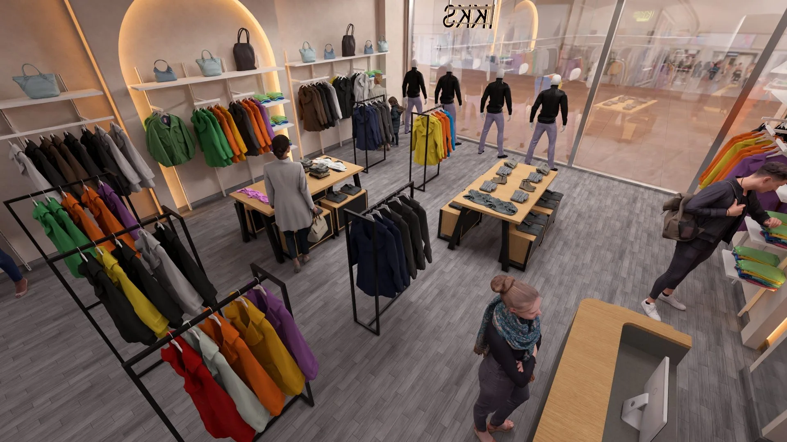
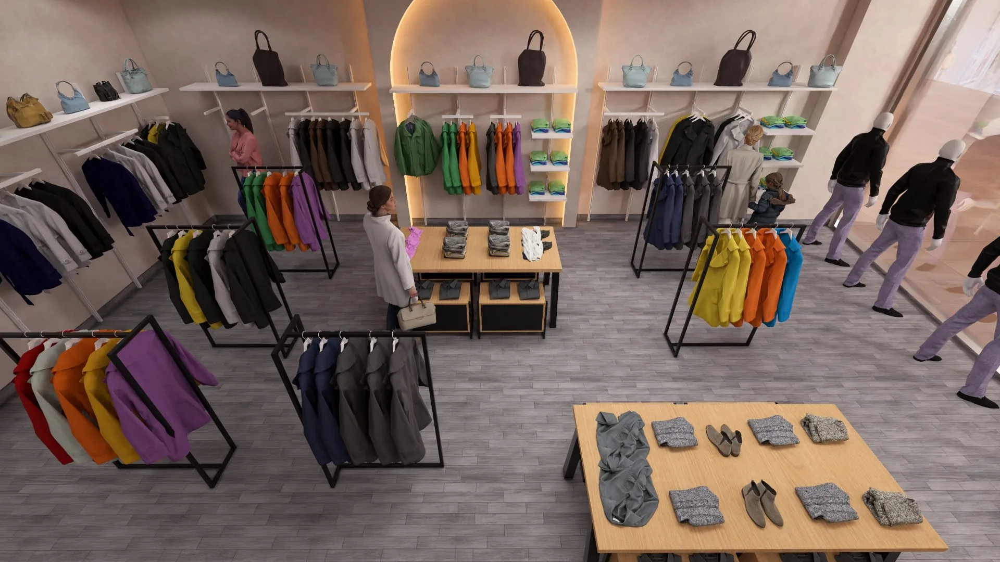
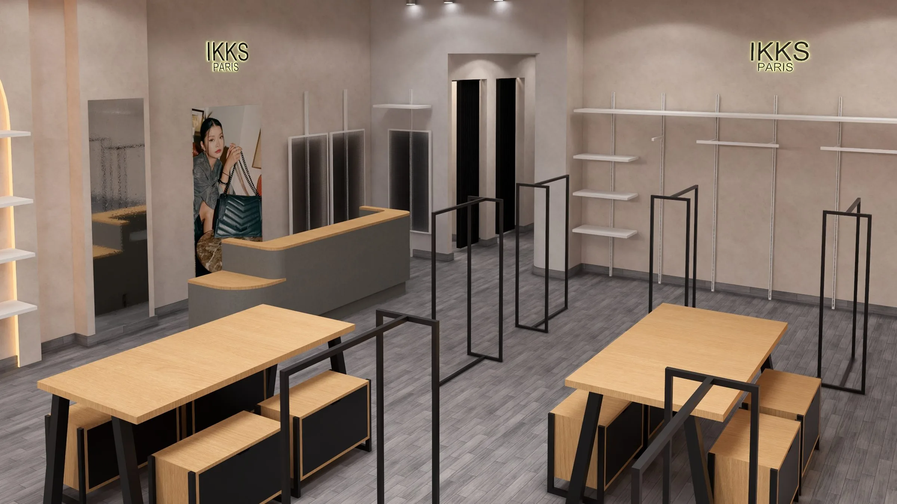
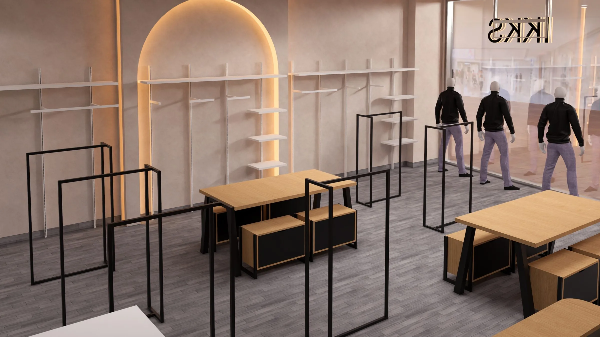
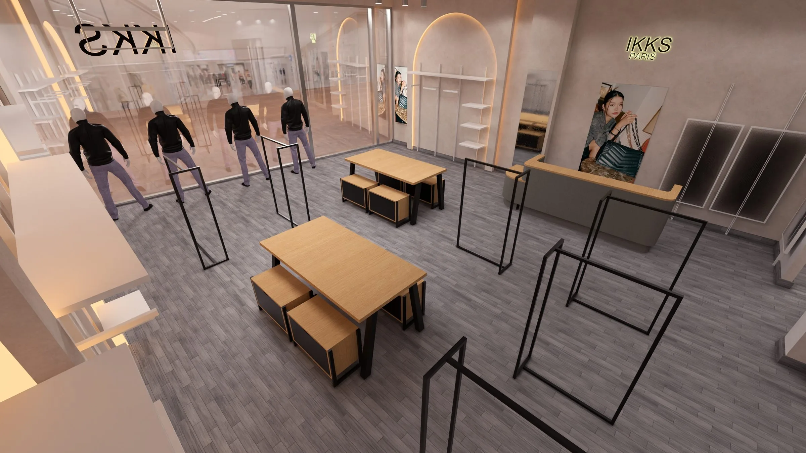
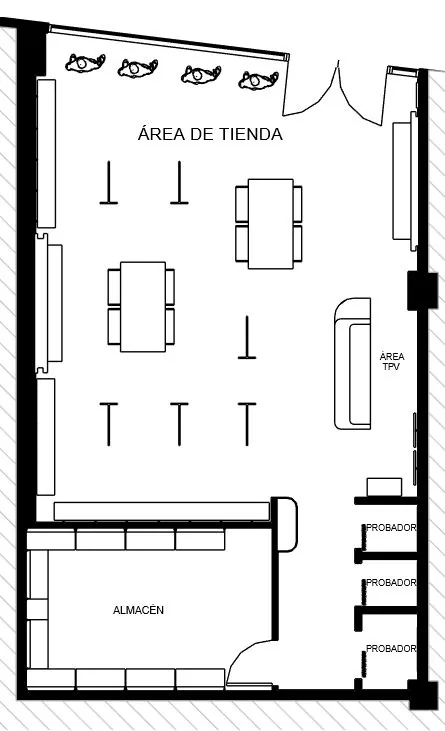
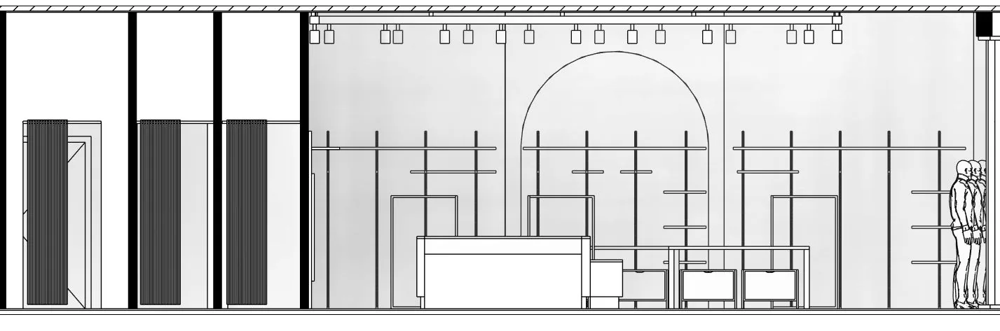

IKKS temporary space
Layout development and project documentation for a temporary fashion space in San Sebastián de los Reyes, prepared for a short installation window inside an operating shopping centre.

- Challenge
- Develop a workable arrangement for sales, fitting rooms, storage and point of sale before a short installation window inside an operating centre.
- Role
- Location plan, proposed layout, dimensioned drawings, elevations and technical documentation.
- Process
- Define the key relationships between the main elements early, then make the principal dimensions and interfaces easy to read.
- Outcome
- Clear project information supporting production preparation and handover to the person responsible for installation.
- What I learned
- Temporary spaces need information that is faster to understand, not documentation with less precision.
The challenge
Sales, fitting rooms, storage and point of sale had to fit into a temporary footprint and work clearly from opening day. With little time available on site, the project information needed to clarify the key dimensions and relationships before installation began.











My contribution
I prepared the location plan, proposed layout, dimensioned drawings and elevations for the main elements, including the checkout counter and fitting-room partitions. I organised this information into a clear project package supporting production preparation and handover to the installation lead.
What stayed with me
Temporary spaces do not need less precision. They need information that is faster to read, because there is very little time to clarify a missing dimension once the installation has started.